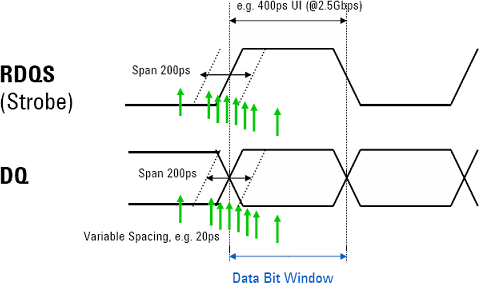
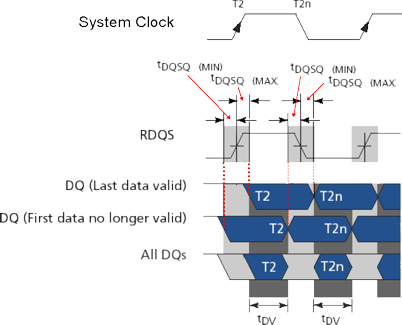
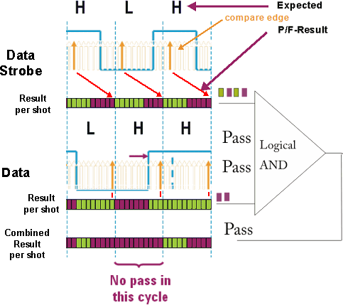
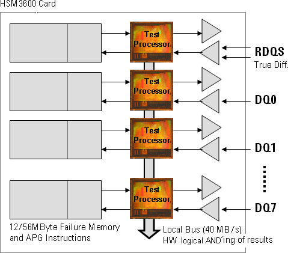

Measuring data and clock edges
The multi-strobe test method enables you to analyze a source synchronous device with a very high resolution.
The data edges and the corresponding strobe edges can be measured by compare edges that have a flexible and variable spacing. The figure below illustrates an example timing of a device with a 400 ps device cycle time. The compare edges shown have a variable spacing. An engineer interested in dynamic skew variations can measure the timings with high resolution.

If you position the compare edges close to each other near the expected edge time of both the strobe pattern and the data (toggle) pattern, while spacing them wider when near the outer ends of the range, you can optimize test time but keep resolution high.
The multi-strobe test method measures the tDQSQ parameters, which are critical in a source sync device. An example of a source sync interface timing, as it is used on a GDDR3 device, is shown in the figure below.
In a read device cycle the read clock (RDQS) edges is surrounded by a time window formed by the first data no longer valid and the last data valid. This window is specified as tDQSQmin time plus tDQSQmax time.
The data valid (tDV) time shown is the consolidated time across all data lines (DQ). This time constitutes the data eye. The device cycle time is represented by the system clock, that is shown as a reference only.

An ideal device has clock and data transitions edge aligned during a read operation. A real device will show some skew: The data transitions may occur a little earlier with respect to the clock or a little later.
- tDQSQmin is defined as maximum time data (DQ) transitions should be ahead of clock (RDQS) transitions.
- tDQSQmax is defined as maximum time clock (RDQS) transitions should be ahead of data (DQ) transitions.
The multi-strobe test methods offer you parameter dialogs, where you can specify, for example, the number of shots applied within a device cycle. The measurement executed by the test method can be briefly described as follows:
- Spec values (tDQSQmax and/or tDQSQmin) are measured using multiple shots. (It depends on the x-mode you choose, whether the test run measures both spec values or only one or the other).
- Compare edges for RDQS and DQ pins are set according to a timing difference, for example, the value specified in the specification sheet of your device.
- Compare edges sweep through the device cycle as described above, while timing difference
between compare edges for strobe and data signals stays constant. Depending on the phase of the
strobe signal relative to the data signal either tDQSQmin or tDQSQmax is measured.
Measurement requires a toggling data pattern read out from the memory array. Otherwise edges cannot be detected.
Note Testing tDQSQmin and tDQSQmax differ in the way the data and clock compare patterns are applied. For tDQSQmax testing, compare data of RDQS need to be inverted. For tDQSQmin testing, compare data of DQs need to be inverted. The reason is that data transitions must not happen earlier than tDQSQmin time interval or not later than tDQSQmax time interval. This is reflected in the wavetable setup for the multistrobe test method.
With each shot, the pass/fail results of strobe and data pins are stored in the error map of the respective channel. After all shots are done the error map data of each of the source sync group pins are superimposed and compressed using a logical AND function.
The figure below shows an example with ten shots per device cycle. The result of each shot is represented in the bar underneath the timing diagram.
The compare edges (also called receive edges) for data strobe (clock RDQS) signal and the compare edges for the data (DQs) lines (only one data line is shown) are offset by a constant time value, for example the spec value tDQSQmin. This is indicated by arrows relating the clock compare edge to the result per shot bar.
For each shot the compare edges are moved by a fraction (one tenth) of the cycle. For every shot, pass (green) or fail (red) results are stored into the error maps of each participating channel. The results are shot by shot superimposed (logically "anded") to form the combined result of pass or fail.
The following results are possible:
- Fail
If at least in one device cycle all shots fail, the combined result leads to a fail. That means the device exceeded the specified tDQSQmin or tDQSQmax value.
- Pass
If at least one shot across all device cycles delivers a pass, the combined result leads to a pass. The device operates within specs.
The figure below illustrates a fail test result.

The HSM channel card is prepared for capturing the multi-strobe results into its per-pin memory. The built-in data busses with fast data access to the per-pin memory allow to perform the necessary logical AND'ing operation on the per-pin error data for each source sync signal group while uploading the results to the system controller. The figure below illustrates this.

The data uploaded can then be analyzed by the device engineer for dynamic and static skew per:
- Device cycle
- Source sync group
- Pin
Note, the hardware can perform a logical operation only across a source sync group. Combining of Pass/Fail results across the data groups is performed in the system controller. To speed up this process you can specify in the test method's parameters use of Rapid Source Sync function where extra buffer pins are used to combine the group results already in hardware.